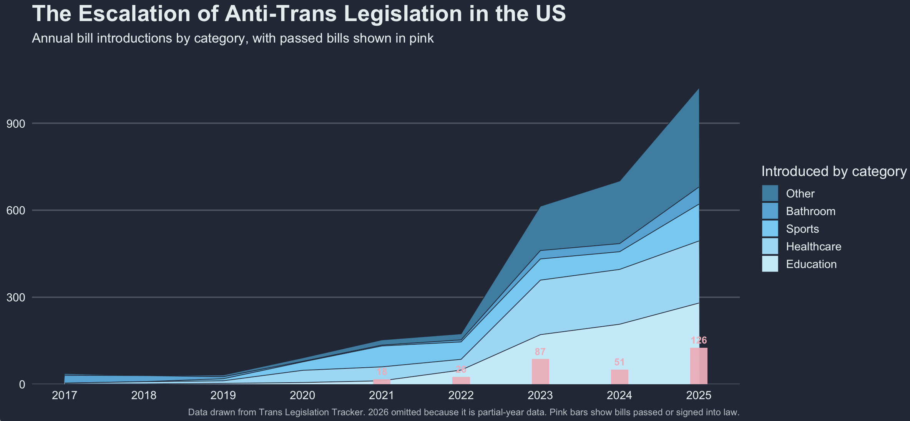
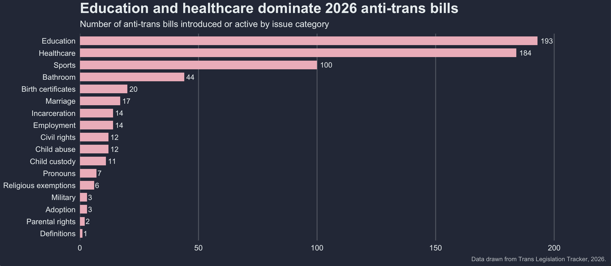
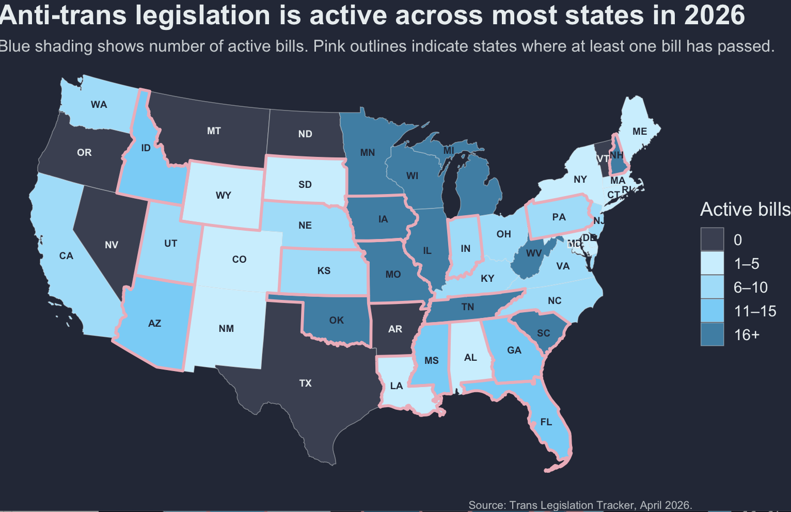
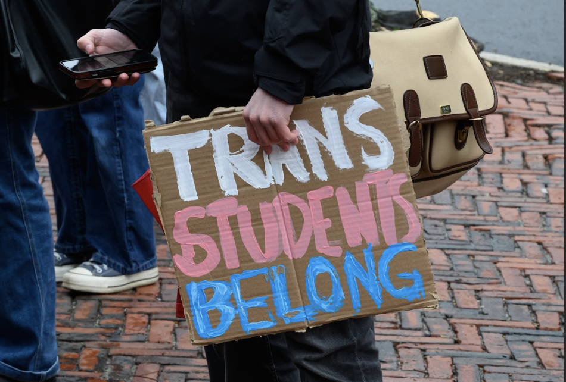
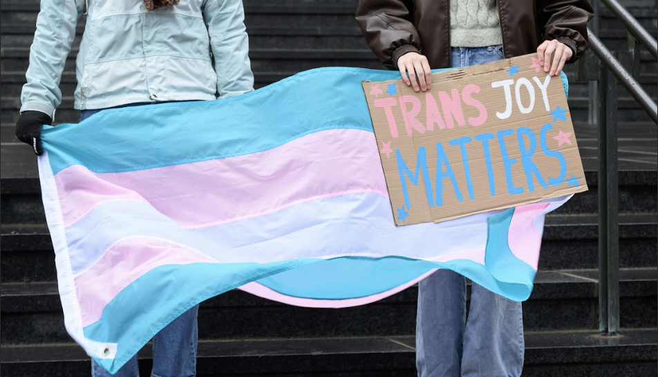

Across the United States, headlines about trans people have become hard to avoid. Trans students, trans athletes, trans patients, trans parents, and trans adults trying to update basic identity documents have all become subjects of public debate. The rhetoric is often familiar: trans people are framed as dangerous, confused, deceptive, mentally ill, or in need of control. What has changed is that this rhetoric is no longer just rhetoric. It is increasingly being written into law.
This project looks at the rise of anti-trans legislation in the United States and asks what these laws mean beyond the headlines. The numbers show a dramatic escalation. In recent years, state legislatures have introduced hundreds of bills targeting healthcare, education, bathrooms, sports, identity documents, and the legal recognition of sex and gender.
The escalation is not subtle.
The first chart shows the rise in anti-trans bills introduced over time. Introduced bills matter, even when they do not pass. They signal what lawmakers are willing to debate, whose lives are treated as politically negotiable, and which narratives are being given institutional power. They also create uncertainty while legislative sessions are still ongoing. For trans people, watching a bill move through a legislature can mean not knowing whether healthcare, school safety, legal documents, or public life will remain accessible.

Source: Trans Legislation Tracker. 2026 is omitted or should be clearly marked because it is partial-year data.
These policies are moving beyond “debate.”
Some of the most extreme policies show how far this project has moved. In Kansas, SB 244 invalidated driver’s licenses with a gender marker that does not match sex assigned at birth and required affected residents to surrender their current credentials. This is not just a debate over sports. It reaches into identification, travel, privacy, voting access, and everyday safety.
Federal policy has also targeted trans people in custody. A 2025 executive order and related federal prison policy restricted gender-affirming care, clothing, commissary items, and pronoun recognition for transgender people in federal prisons and immigration detention centers. The danger is not only that trans people are being debated. It is that increasingly severe versions of this rhetoric are becoming enforceable policy.
Kansas
SB 244
Invalidates some gender-marker updates on driver’s licenses and other state documents.
Federal
Executive Order / Detention Policy
Restricts gender-affirming care and recognition for trans people in federal custody and immigration detention.
What kinds of life are being targeted?
The second chart breaks bills down by category. This matters because anti-trans legislation does not operate in just one domain. A healthcare bill can affect whether someone can access gender-affirming care. An education bill can shape whether a student is called by the right name. A bathroom bill can make public space feel dangerous. A document bill can make everyday identification risky.

Source: Trans Legislation Tracker. Categories include healthcare, education, bathrooms, sports, and other restrictions.
“It feels like everybody has just given up on us. Why do we have to prove that we are human too?”
— Trans student at Brown, 19Policy geography is also emotional geography.
Counting bills alone can make the issue feel abstract. Pairing state policy environments with estimates of the trans population shifts the question from “how many bills are there?” to “how many people are living under these conditions?” A state with multiple restrictions is not just a political data point. It is a place where trans people go to school, make medical decisions, apply for jobs, build families, and decide whether they can stay.

Sources: Trans Legislation Tracker, ACLU, and UCLA Williams Institute state-level transgender population estimates.
The mental toll is part of the story.
The effects of anti-trans legislation are material: healthcare access, identification, school safety, public facilities, and legal recognition. But the mental toll is also profound. Even the act of repeatedly introducing these bills sends a message. It suggests that trans bodies require regulation, that trans people are problems to be solved, and that basic recognition can be withdrawn.
46%
of transgender and nonbinary young people seriously considered attempting suicide in the past year.
14%
of transgender and nonbinary young people attempted suicide in the past year.
90%
of LGBTQ+ young people said recent politics negatively impacted their well-being.
Source: The Trevor Project 2024 U.S. National Survey on the Mental Health of LGBTQ+ Young People.

“These narratives around trans folks, and especially youth, being ‘mentally ill’ made it hard to accept my identity. For the first two years after coming out, I couldn’t even really say the word ‘trans.’”
— Trans student at Brown, 19
This is why rhetoric matters. It shapes policy, and policy shapes the conditions under which people try to live. When trans people are repeatedly described as threats, mistakes, or problems, the consequences do not remain symbolic. They appear in school policies, medical systems, state IDs, bathrooms, detention centers, and legislative hearings.
Conclusion: this is closer than it looks.
“It really sucks to be the canary in the coal mine.”
— Trans student at Brown, 22Anti-trans legislation is often discussed as a policy trend. But for trans people, it is also a daily atmosphere. It affects your friends, your classmates, your family members, your neighbors, and people you pass without knowing what they are carrying. The numbers matter because they show scale. The stories matter because they show what scale feels like from inside.
The same rhetoric used against trans people is also used against immigrants, against reproductive freedom, and against anyone whose body or family does not fit neatly into a narrow political story. These struggles are not identical, but they are connected. They depend on the idea that some people’s lives can be debated, regulated, and made unsafe in the name of someone else’s comfort.
Paying attention is not enough, but it is a beginning. Donate to organizations like the Trevor Project, the ACLU, local trans mutual aid funds, and community groups doing direct support. Show up for local rallies. Speak at hearings when anti-trans bills are introduced. Listen to trans people before the crisis becomes a headline. The people affected by these laws are already here, already living, already organizing, and already asking to be seen as fully human.
About the project and data selection
I use the Trans Legislation Tracker as my primary source because it offers a broad and detailed accounting of anti-trans bills across the United States. This matters because anti-trans legislation does not only appear in obvious forms, such as sports bans or healthcare restrictions. Some bills work by redefining legal categories of “male” and “female,” restricting recognition documents, limiting school policies, or creating administrative barriers that make trans life harder to navigate.
I also use the ACLU tracker as a comparison point and the UCLA Williams Institute for estimates of the transgender population by state. These estimates allow the project to move beyond bill counts and ask how many people may be affected by different policy environments. The Trevor Project is included as broader context on LGBTQ youth mental health. I do not use it to claim that legislation directly causes specific outcomes in every case, but to show why hostile policy climates matter.
Quotes are anonymized because the people interviewed are students and young trans people speaking about sensitive experiences. The goal is not to expose individuals, but to connect the scale of the data to the lived reality behind it.
Sources and acknowledgements
Trans Legislation Tracker · Trans Legislation Tracker: Learn · ACLU Legislative Attacks Tracker · How the ACLU Tracks Anti-LGBTQ Bills · UCLA Williams Institute Transgender Population Estimates · The Trevor Project 2024 Survey · National LGBTQ+ Bar Executive Order Tracker
Thank you to the organizations tracking this legislation, to Transformation at Brown for its work protecting and supporting trans students, and to my trans friends and family who continue to survive, organize, and stand in solidarity.